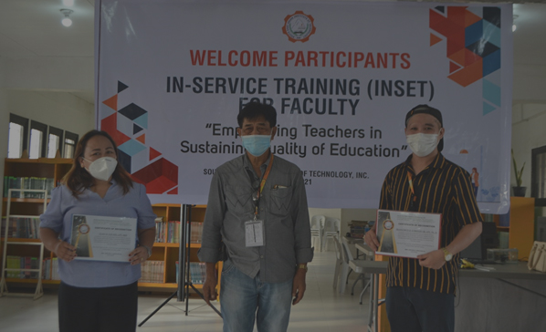
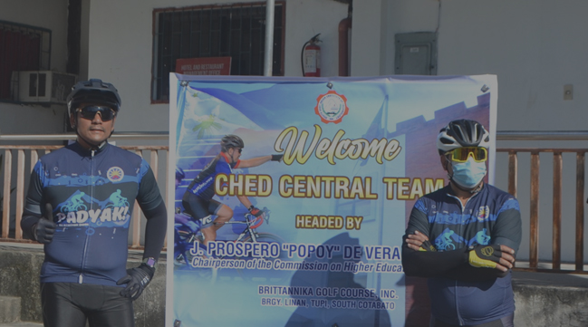

GAWAD PARANGAL: SEAIT RECEIVES A PLAQUE OF RECOGNITION
South East Asian Institute of Technology, Inc. has been recognized as a Higher Education institution in Tupi, South Cotabato that has consistently adhered to its advocacy and program of affordable higher education for the Indigenous people and neighboring tribes during the Gawad Parangal for HEIs in Region 12 last July 23, 2021 at South Cotabato Gymnasium, Koronadal City

INSET 2021: EMPOWERING TEACHERS IN SUSTAINING QUALITY OF EDUCATION
Anchored to its mission of providing quality education, the South East Asian Institute of Technology, Inc. launched the In-Service Training (INSET) 2021 to empower teachers in sustaining quality education amidst the new normal.
The training was divided into three. First, the Syllabi Making facilitated by Francisco Z. Lorenzo Jr., Ph. D. It aimed to revise and redesign effective syllabus based on specified CMO. Second, the Assessment Tools facilitated by Leah D, Locsin, MIE. It aimed to discuss responsive classroom assessment tools for teachers under the new normal and to construct a test using Table of Specification (TOS). Lastly, the Daily Lesson Log facilitated by Rovi D. Siloterio, MA, RGC. It aimed to revisit the DLL guidelines for daily lesson preparation

SEAIT facilitates Padyak 2021 with Chairman De Vera
The South East Asian Institute of Technology, Inc. facilitated the Padyak 2021: "Padyak sa Edukasyong Tumpak" in coordination with the Commission on Higher Education (CHED) Region XII,with Dr. J. Prospero "Popoy" E. De Vera III, DPA as the guest last July 22, 202. The opening and kick-off ceremony was held at Britannika Golf Course and Country Club at Brgy. Linan, Tupi South Cotabato.
The primary goal of the activity is to commemorate the success of access to free education across the region.
Leave a comment